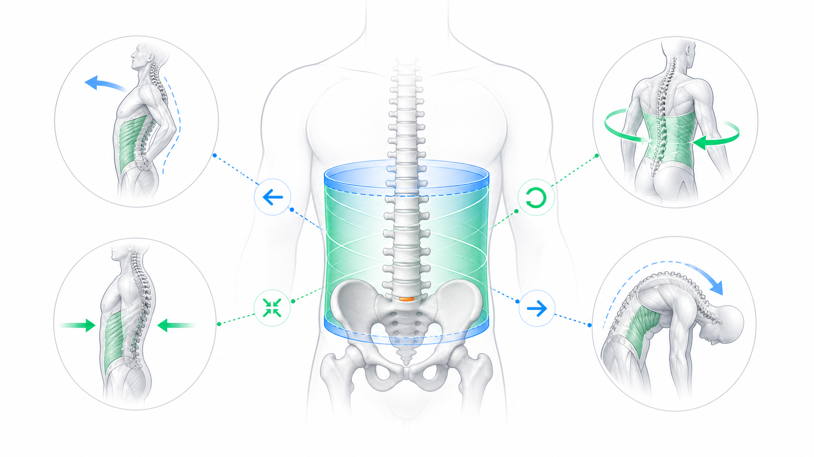
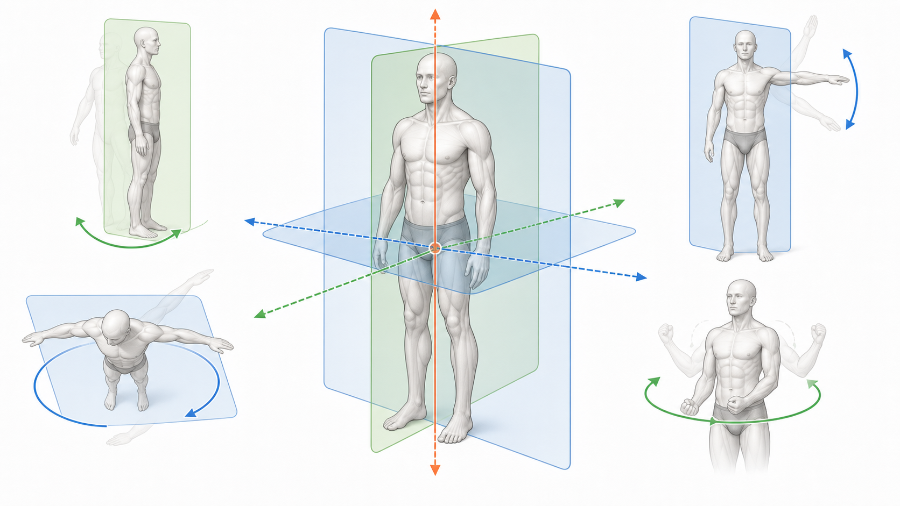

Day 19 · 肌力与肌耐力的力学决定因素

肌力不是只看肌肉大小。神经因素决定能叫醒多少运动单位、叫得多快、是否同步；肌肉横截面积决定长期产力底盘；长度-张力关系和力-速度曲线决定某个关节角度、某个速度下能输出多少。
肌耐力看重复收缩中能否维持张力和动作质量。SSC 今天只记概念：先快速牵张再立刻缩短，利用弹性势能和牵张反射，完整三阶段留到增强式训练。
打开 Day19 原学习页 →目标：把早上“力量为什么变大、为什么变慢、为什么能撑久”压缩成可回忆框架，同时回拉 Day18、Day16、Day12、Day05。今天不推进进度，只复习。
肌力不是只看肌肉大小。神经因素决定能叫醒多少运动单位、叫得多快、是否同步；肌肉横截面积决定长期产力底盘；长度-张力关系和力-速度曲线决定某个关节角度、某个速度下能输出多少。
肌耐力看重复收缩中能否维持张力和动作质量。SSC 今天只记概念：先快速牵张再立刻缩短，利用弹性势能和牵张反射，完整三阶段留到增强式训练。
打开 Day19 原学习页 →



今日新知识 Day 19：为什么新手力量增长常常先于肌肉明显增大？
今日新知识 Day 19：长度-张力关系怎么解释“最佳长度产力最大”？
今日新知识 Day 19：力-速度曲线里，向心收缩速度越快，力量怎样变化？离心为什么特殊？
今日新知识 Day 19：SSC 是什么？今天只需要记住哪一句？
Day 18：硬拉为什么要求中立脊柱和腹内压，而不是圆背硬扛？
Day 18：举重腰带能不能替代核心发力？为什么？
Day 16：力矩公式是什么？为什么杠铃离身体越远，动作越难？
Day 16：人体大多是什么杠杆？这和力量、速度有什么关系？
Day 12：McGill 核心四功能是什么？为什么核心训练不只是卷腹？
Day 5：二头弯举、侧平举、转体分别主要在哪个面、绕哪个轴？
| 易错点 | 错因 | 修正句 |
|---|---|---|
| 把力量增长全归因于肌肉变大 | 忽略早期神经适应。 | 新手早期力量快涨，优先想到募集、发放频率和协调改善。 |
| 以为速度越快力量越大 | 混淆爆发力表现和单次最大产力。 | 向心速度越快，肌肉能产生的力越小；爆发力是快速产力，不等于最大力最大。 |
| 把离心训练当成越多越好 | 只看到离心产力大，忽略损伤和恢复成本。 | 离心能承受大张力，也更容易酸痛和微损伤，要控制剂量。 |
| 肌耐力训练只追求做到累 | 把疲劳感当成有效刺激。 | 肌耐力要在重复收缩中维持张力、轨迹和目标肌参与。 |
| 背动作平面但忘了轴 | 没记住“轴垂直于面”。 | 矢状面配额状轴，额状面配矢状轴，水平面配垂直轴。 |